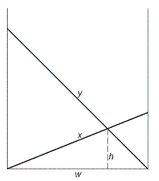

In the classic "Crossing Ladders" problem, we are given the lengths $x$ and $y$ of two ladders resting on the opposite walls of a narrow, level street. We are also given the height $h$ above the street where the two ladders cross and we are asked to find the width of the street ($w$).

Here, we are only concerned with instances where all four variables are positive integers.
For example, if $x = 70$, $y = 119$ and $h = 30$, we can calculate that $w = 56$.
In fact, for integer values $x$, $y$, $h$ and $0 \lt x \lt y \lt 200$, there are only five triplets $(x, y, h)$ producing integer solutions for $w$:
$(70, 119, 30)$, $(74, 182, 21)$, $(87, 105, 35)$, $(100, 116, 35)$ and $(119, 175, 40)$.
For integer values $x, y, h$ and $0 \lt x \lt y \lt 1\,000\,000$, how many triplets $(x, y, h)$ produce integer solutions for $w$?